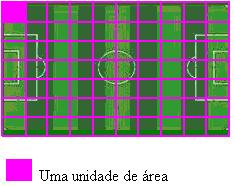

bhaskara
A fórmula de Bhaskara é um método resolutivo para equações do segundo grau cujo nome homenageia o grande matemático indiano que a demonstrou. Essa fórmula nada mais é do que um método para encontrar as raízes reais de uma equação do segundo grau fazendo uso apenas de seus coeficientes. Vale lembrar que coeficiente é o número que multiplica uma incógnita em uma equação."
Calcular bhaskara
Função quadratica
função quadrática, também chamada de função do segundo grau, é expressa como
f(x) = ax² + bx + c ou y= ax² + bx + c, sendo que os coeficientes 'a, b e c' números reais
e 'a' diferente de 0 (zero).
De modo geral, as funções possuem dois elementos básicos: 1) domínio, que corresponde ao
conjunto dos valores possíveis das abscissas (x) e 2) imagem, que é o conjunto de valores das
ordenas (y), estabelecida pela aplicação de f(x)."+
Já o grau da função é determinado de acordo com o maior expoente da variável x.
No caso da função quadrática, dois é o mais expoente de x. Mas atenção! Se em uma função
não houver nenhum expoente na variável x significa que ela é do primeiro grau.
Area
Área é a medida de uma superfície.
A área do campo de futebol é a medida de sua superfície (gramado).
Se pegarmos outro campo de futebol e colocarmos em uma malha quadriculada,
a sua área será equivalente à quantidade de quadradinho. Se cada quadrado for uma unidade de área:

MVP do nosso app em desenvolvimento